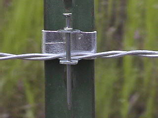
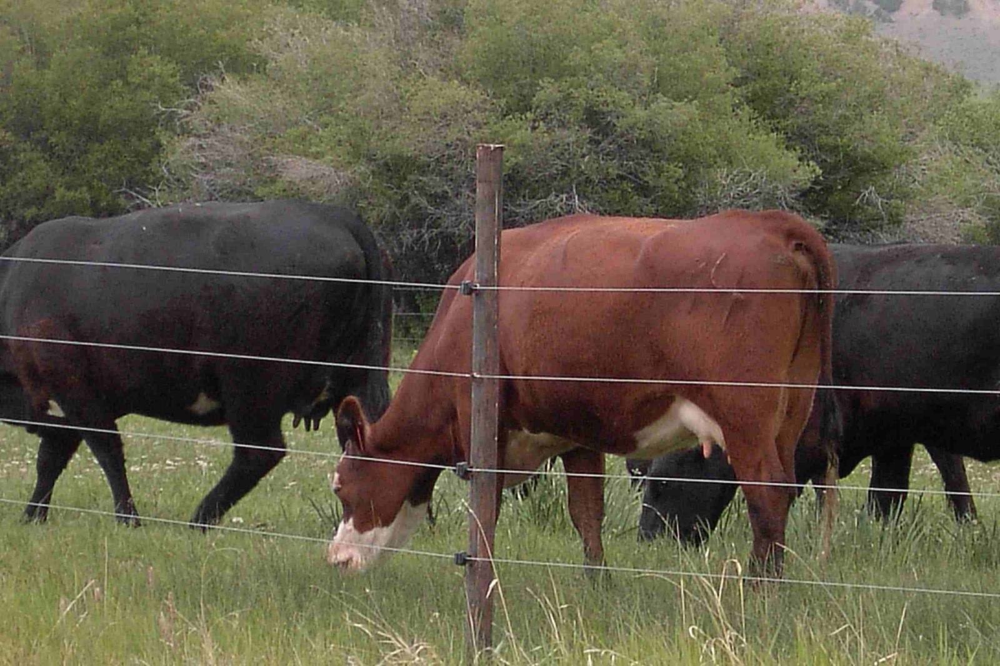
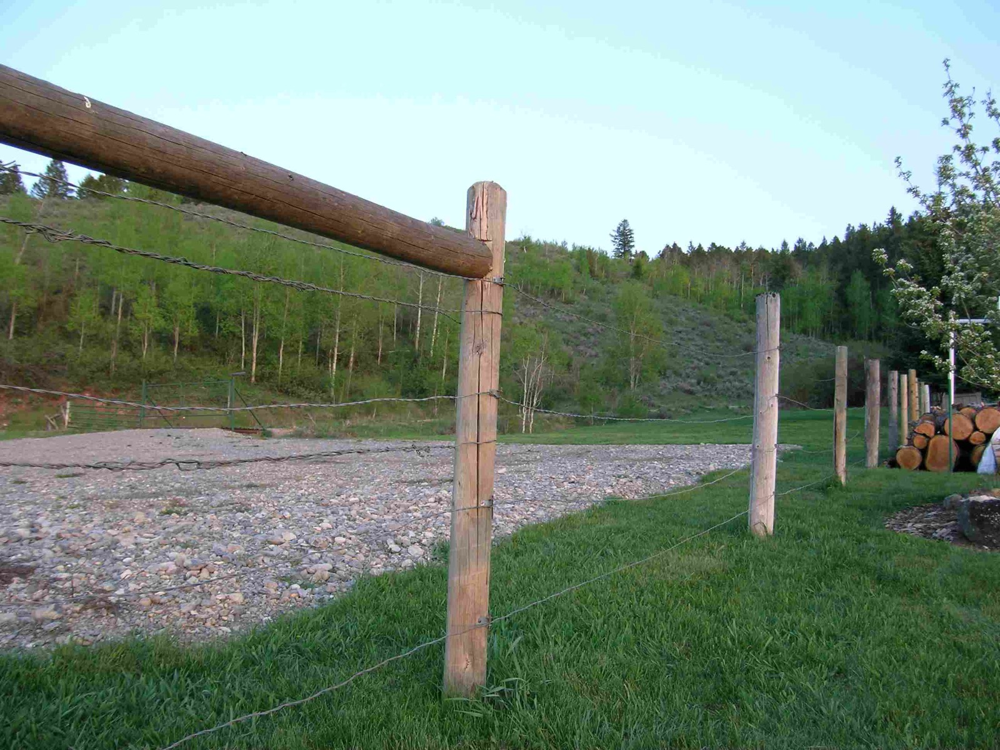
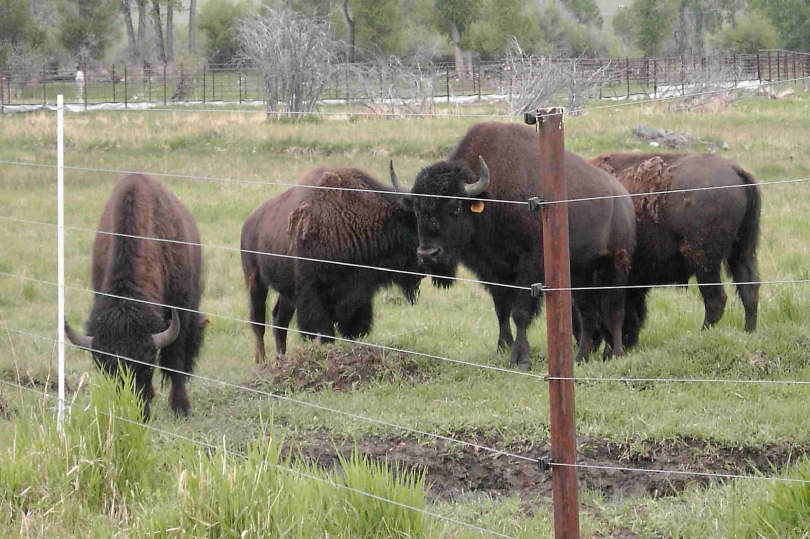

Made in the State of Idaho, U.S.A.
Durable, Innovative, and Versatile Steel Fencing Clip Solutions
Welcome to the home of the labor-saving stretch-through clips. Say goodbye to unsightly, dangerous, sagging, and loose fence wires.
Our Fence Clips
Our innovative solutions guarantee exceptional durability, enhanced safety, and a clean, professional finish every time.

Steel T-Post Lay-Down Clip
Our most popular clip. Lay the fence down for winter, stretch it back in spring.

Wood Post Lay-Down Clip
Fits 4", 5" or 6" wood posts. Nails included.

Weld-On Steel Post Lay-Down Clip
Our toughest clip, for the most demanding enclosures.

Steel T-Post Permanent Clip
An install-and-forget clip for no-snow areas. Fits all T-Posts.

Super-Tough Insulator
Fits all our lay-down clips, for electric wire or tape.
Benefits of the Tincup Creek Fencing System
- 1½ times strongerOur T-Post clips are more than 1½ times the strength of T-Post tie wire anchors.
- Approved for high tensile wireA preferred method approved for attaching high tensile wire to steel posts. Now in use along interstate highways.
- Stretch-through designWires can be tightened through the clips.
- Fewer broken wiresWires are less likely to break under heavy stress such as snow or impact loads, because they can stretch over the entire span between anchor points.
- Longer wire lifeWires last longer because they aren't damaged by tie wires or staples.
- Pays for itselfSavings on installation and yearly repairs will pay for the clips. Reduces upkeep, with low annual maintenance.
- Fast to installThe Tincup Creek Fencing System allows you to rapidly install and/or lay down wire.
- For all wire typesBarbed, solid, electric, or electric tape. All our clips can be used with electric wire or electric tape with our heavy duty insulators. Weld-On clips for steel posts, used with electric insulators, are superior large animal retention systems.
- Access without gatesA must for heavy snow country, snowmobiling, game crossings, and access to or from property without the need for gates. Lay down the fence, drive through, and quickly replace the wires in the clips.
- Cleanest, strongest installationLay-Down clips can be used in areas of heavy snowfall to prevent damage, or where lay-down access is needed, but they are also used in all types of fencing environments to make the cleanest, strongest installation.



Ready to order?
Tell us what you need and we'll send you a quote, or call us at 208-873-3000.